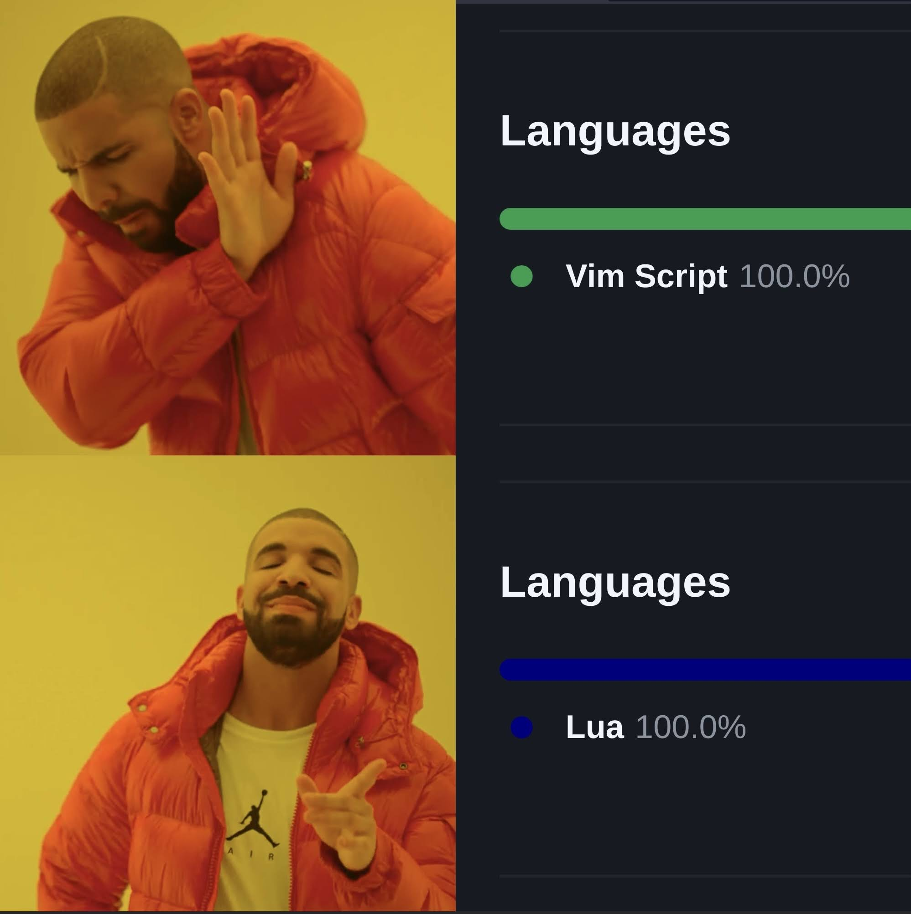

My Neovim config in Lua

Vimscript is great but Lua makes more sense#
I have been using Neovim for a little over two years now and it is honestly incredible to see how the software as well as the community has grown into this really inclusive group with a strong focus on collaboration and rapid update cycles.
My earlier configs relied on Vimscript and plugins written in Vimscript, but I felt like I wasn’t being minimal enough with my config and not embracing the design philosophy of Neovim. When I was experimenting with the idea of making Neovim my daily driver, native LSP, Treesitter, and a number of other game-changing features were still in the works and I wanted stability in my development environment. Now it has reached a stage where the transition to a completely Lua based config makes more sense and is honestly, a pleasure to maintain. There is no shortage of community driven content and plugins for tuning your configs to suit your individual needs and maintain the high performance we’ve grown to love in Neovim. I decided to make the transition.
How the config looks#

Plugins Used#
Packer: https://github.com/wbthomason/packer.nvim
Material Theme: https://github.com/marko-cerovac/material.nvim
Lualine: https://github.com/nvim-lualine/lualine.nvim
Web Devicons: https://github.com/kyazdani42/nvim-web-devicons
Gitsigns: https://github.com/lewis6991/gitsigns.nvim
Autopairs: https://github.com/windwp/nvim-autopairs
Telescope: https://github.com/nvim-telescope/telescope.nvim
Debug Adapter Protocol: https://github.com/mfussenegger/nvim-dap
Autocompletion: https://github.com/hrsh7th/nvim-cmp
Hello native LSP#
This was probably the most anticipated feature in Neovim 0.5 stable and I must say, making the switch from coc has been seamless so far. The reason I switched is to minimize the external dependecy of NodeJS that coc has. It is no doubt a mature and ‘works out of the box’ product, but I wanted to have a config that I can port to any OS that I want with minimal downtime.
So far, I have setup LSP for C++, Python and Rust, with autocompletion capabilties. You must install the LSP servers by yourself which is quite straightforward if you use a package manager like Homebrew for macOS. I use the following LSP servers:
-
pyrightfor Python -
clangdfor C++ -
rust-analyzerfor Rust
Check out the lsp-settings file to see the configuration in detail.
Acknowledgements#
As I mentioned before, a software is only as good as the community around it, and people like ThePrimeagen and TJ DeVries among countless others make it an absolute joy to learn new tips and tricks about getting comfortable with Neovim. Also a huge thanks to the amazing Neovim dev team for keeping the updates coming!